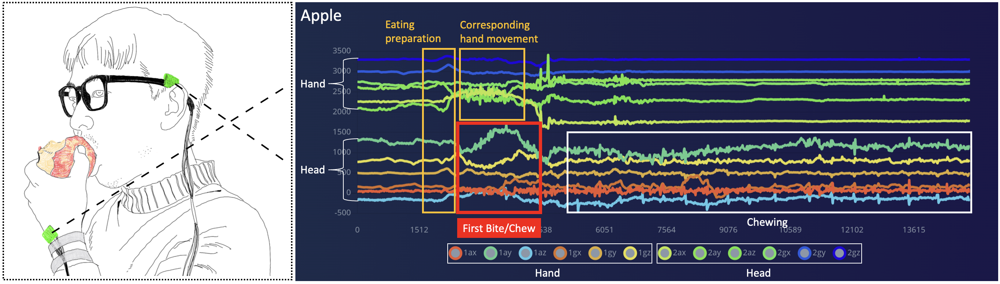
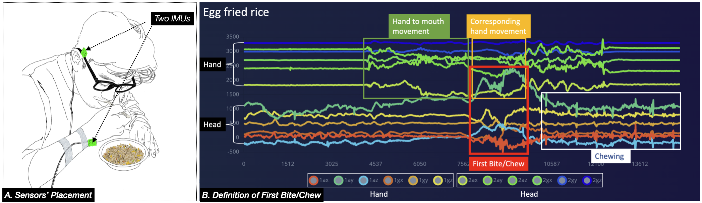
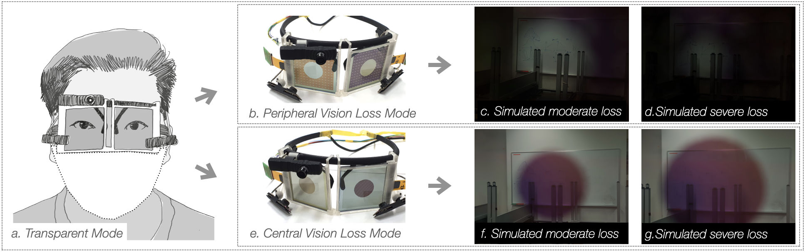

Jun 02, 2024 updated
A full list of publications can be found on Google Scholar.
Inner self drawing machine
Qing Zhang, Fan Xie, Yifei Huang, Yun Suen Pai, George Chernyshov, Jing Huang, Xiongqi Wang, Jamie A Ward, Kai Kunze.
SIGGRAPH Asia'23, Art Gallery
Besides men and women, people can be neither man nor woman, fluid identity, transgender, and agender.
Not only that, in terms of sexual orientation, besides heterosexuals, there are homosexuals, bisexuals,
pansexuals, and asexuals as well. However, ignorance and lacking empathetic understanding of those sexual
minorities make their lives harsh and suffering. For instance, in the case of transgender people, 28% of
them postponed their health care due to discrimination, 19% of them refused medical care altogether, and
28% of them experienced verbal harassment by medical professionals, according to a 2011 national transgender
discrimination survey (USA). Unluckily, we are apt to generate a basic understanding of others based on their
gender expressions and use such irresponsible and heuristic findings to deal with others. Thus, we decided to
create an installation to at least minimize the gap for a moment when the audience can enjoy themselves by
watching the drawing performance of their ideal portrait (inner-self).
Regarding the AI portrait painter, we leverage StyleGAN to generate the continuous gender spectrum of each participant based on their facial
features, in which they can choose their ideal gender representation that reflects their inner self the most. Then our AI portrait painter
"draws" the selected "self" on the canvas. In general professional painters can detect and draw the most confident and beautiful us; on the other hand, we tend to exaggerate our flaws and ignore our attractive parts. When the drawing performance finishes, the audience can receive the drawing result as a well-printed portrait simultaneously. The printed portrait also works as a souvenir of participating in our exhibition. Our work aims to raise an empathic understanding
https://dl.acm.org/doi/10.1145/3550470.3558429
Download this paper

First Bite/Chew: distinguish diferent types of food by first biting/chewing and the corresponding hand movement
Junyu Chen, Xiongqi Wang, Juling Li, Thad Starner, George Chernyshov, Jing Huang, Yifei Huang, Kai Kunze, Qing Zhang
CHI'23, Late-breaking work
Imbalanced food intake contributes to various diseases,
such as obesity, diabetes, high blood pressure, high cholesterol,
heart disease, and type-2 diabetes. At the same time,
food intake monitoring systems play a signifcant role in the treatment.
Most current food intake tracking methods are camera-based,
on-body sensor-based, microphone based, and self-reported.
The challenges that remain are social acceptance, lightweight,
easy to use, and inexpensive. Our method leverages two
6-axe Inertial Measurement Units (IMU) on the glasses’
leg and the wrist to detect the user’s food intake activities
using a machine learning capable Micro Controller Unit (MCU).
We introduced the concept of the frst bite/chew, which is a
stable and reliable indicator to distinguish food types. Our
implementation results show that our method can distinguish
seven kinds of food at an accuracy of 93.26% (average) over
all four participants.
https://dl.acm.org/doi/10.1145/3582700.3583708
Download this paper

First Bite/Chew: distinguish typical allergic food by two IMUs
Juling Li, Xiongqi Wang, Junyu Chen, Thad Starner, George Chernyshov, Jing Huang, Kai Kunze, Qing Zhang
AHs'23, Best Poster Award
Eating or overtaking allergic foods may cause fatal symptoms or even death for
people with food allergies. Most current food intake tracking methods are camera-based,
on-body sensor-based, microphone based, and self-reported. However,
challenges that remain are allergic food detection, social acceptance, lightweight,
easy to use, and inexpensive.
Our approach leverages the first bite/chew and the corresponding hand movement as an
indicator to distinguish typical types of the allergic food. Our initial feasibility
study shows that our approach can distinguish six types of food at an accuracy of 89.7% over
all four participants' mixed data. Particularly, our method successfully detected and
distinguished typical allergic foods such as burgers (wheat), instant noodles (wheat),
peanuts, egg fried rice, and edamame, which can be expected to contribute to not only
personal use but also medical usage.
https://dl.acm.org/doi/10.1145/3582700.3583708
Download this paper

Seeing our Blind Spots: Smart Glasses-based Simulation to Increase Design Students' Awareness of Visual Impairment
Qing Zhang, Giulia Barbareschi, Yifei Huang, Juling Li, Yun Suen Pai, Jamie Ward, Kai Kunze.
UIST'22
MAs the population ages, many will acquire visual impairments.
To improve design for these users, it is essential to build awareness of their perspective during everyday routines,
especially for design students. Although several visual impairment simulation toolkits exist in both academia and as commercial products,
analog, and static visual impairment simulation tools do not simulate effects concerning the user’s eye movements. Meanwhile,
VR and video see-through- based AR simulation methods are constrained by smaller fields of view when compared with the natural
human visual field and also suffer from vergence-accommodation conflict (VAC) which correlates with visual fatigue, headache,
and dizziness. In this paper, we enable an on-the-go, VAC-free, visually impaired experience by leveraging our optical see-through
glasses. The FOV of our glasses is approximately 160 degrees for horizontal and 140 degrees for vertical, and participants can
experience both losses of central vision and loss of peripheral vision at different severities. Our evaluation (n =14) indicates that
the glasses can significantly and effectively reduce visual acuity and visual field without causing typical motion sickness symptoms
such as headaches and or visual fatigue. Questionnaires and qualitative feedback also showed how the glasses helped to increase
participants’ awareness of visual impairment.
https://doi.org/10.1145/3526113.3545687
Download this paper
Tunnel Vision – Dynamic Peripheral Vision Blocking Glasses forReducing Motion Sickness Symptoms
Qing Zhang, Hiroo Yamamura, Holger Baldauf, Dingding Zheng, Kanyu Chen, Junichi Yamaoka,Kai Kunze. ISWC'21
Motion sickness affects roughly a third of all people. Narrowing thefield of view (FOV) can help to reduce motion sickness symptoms.
In this paper, we present Tunnel Vision, a type of smart glassesthat can dynamically block a wearer’s
peripheral vision area usingswitchable polymer dispersed liquid crystal (PDLC) film. We evalu-ate the
prototype in a virtual reality environment. Our experiments(n=19) suggest that Tunnel Vision statistically
significantly reducesthe following Simulator Sickness Questionnaire (SSQ) related mo-tion sickness symptoms
without impacting immersion: "difficultyconcentrating" (F(2,35) = 4.121, p = 0.025), "head feeling heavy"(F(2,35)
= 3.231, p = 0.051) and "nausea" (F(2,35) = 3.145, p = 0.055). (PDF) Tunnel Vision – Dynamic Peripheral Vision Blocking Glasses for
Reducing Motion Sickness Symptoms.
https://doi.org/10.1145/3460421.3478824
Download this paper
Programmable Peripheral Vision: augment/reshape human visual perception
Qing Zhang, Yifei Huang, George Chernyshov, Juling Li, Yun Suen Pai, and Kai Kunze. IUI'22
Motion sickness affects roughly a third of all people. Narrowing thefield of view (FOV) can help to reduce motion sickness symptoms.
In this paper, we present Tunnel Vision, a type of smart glassesthat can dynamically block a wearer’s
peripheral vision area usingswitchable polymer dispersed liquid crystal (PDLC) film. We evalu-ate the
prototype in a virtual reality environment. Our experiments(n=19) suggest that Tunnel Vision statistically
significantly reducesthe following Simulator Sickness Questionnaire (SSQ) related mo-tion sickness symptoms
without impacting immersion: "difficultyconcentrating" (F(2,35) = 4.121, p = 0.025), "head feeling heavy"(F(2,35)
= 3.231, p = 0.051) and "nausea" (F(2,35) = 3.145, p = 0.055). (PDF) Tunnel Vision – Dynamic Peripheral Vision Blocking Glasses for
Reducing Motion Sickness Symptoms.
https://doi.org/10.1145/3490100.3516469
Download this paper
GazeSync: Eye Movement Transfer Using an Optical Eye Tracker and Monochrome Liquid Crystal Displays
Qing Zhang. CHI'22
Motion sickness affects roughly a third of all people. Narrowing thefield of view (FOV) can help to reduce motion sickness symptoms.
In this paper, we present Tunnel Vision, a type of smart glassesthat can dynamically block a wearer’s
peripheral vision area usingswitchable polymer dispersed liquid crystal (PDLC) film. We evalu-ate the
prototype in a virtual reality environment. Our experiments(n=19) suggest that Tunnel Vision statistically
significantly reducesthe following Simulator Sickness Questionnaire (SSQ) related mo-tion sickness symptoms
without impacting immersion: "difficultyconcentrating" (F(2,35) = 4.121, p = 0.025), "head feeling heavy"(F(2,35)
= 3.231, p = 0.051) and "nausea" (F(2,35) = 3.145, p = 0.055). (PDF) Tunnel Vision – Dynamic Peripheral Vision Blocking Glasses for
Reducing Motion Sickness Symptoms.
https://doi.org/10.1145/3491101.3503821
Download this paper